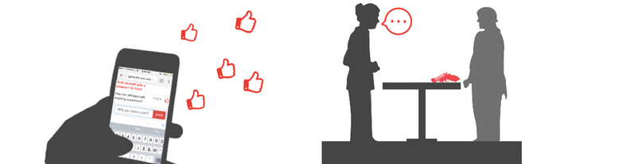
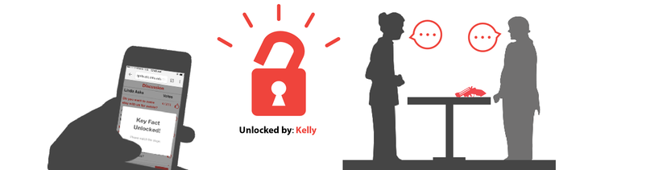
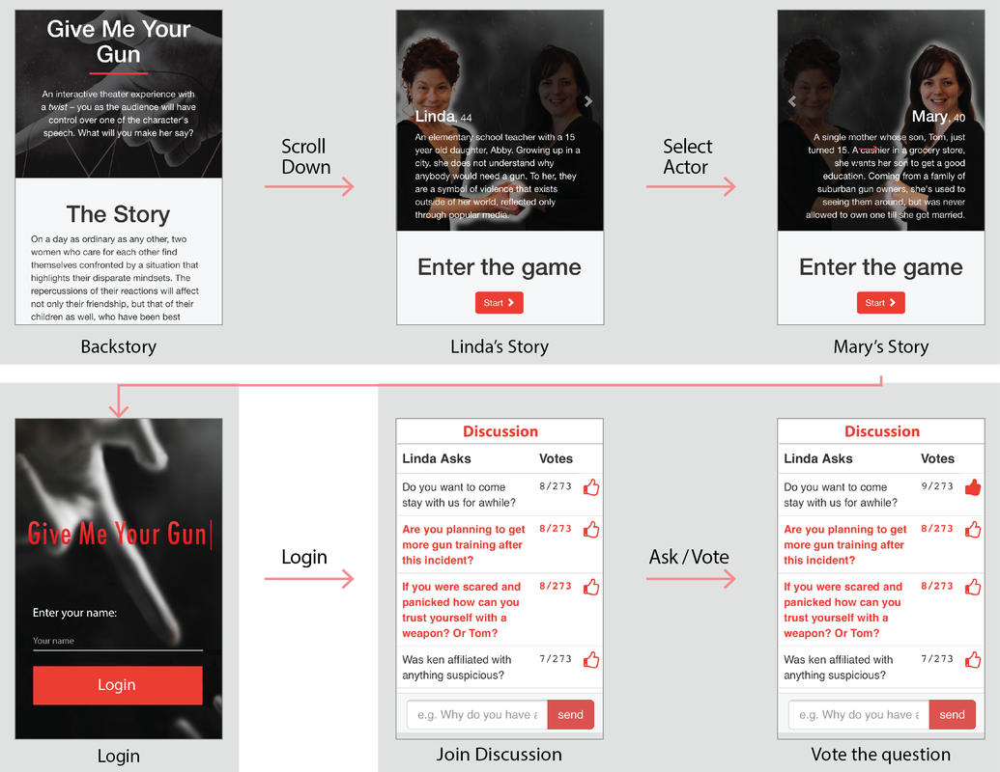
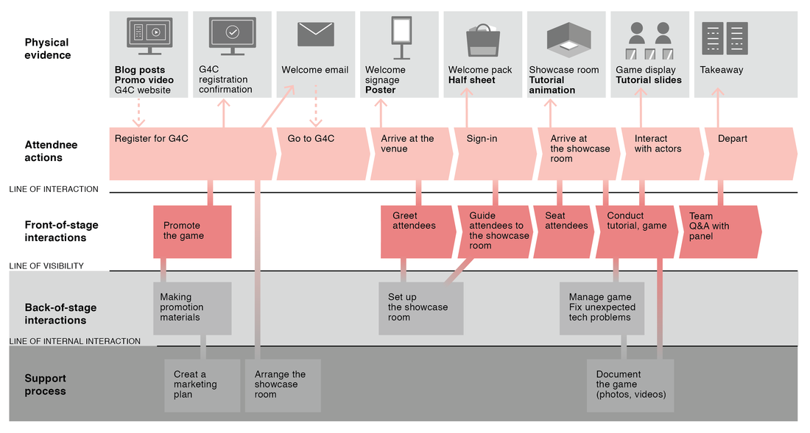
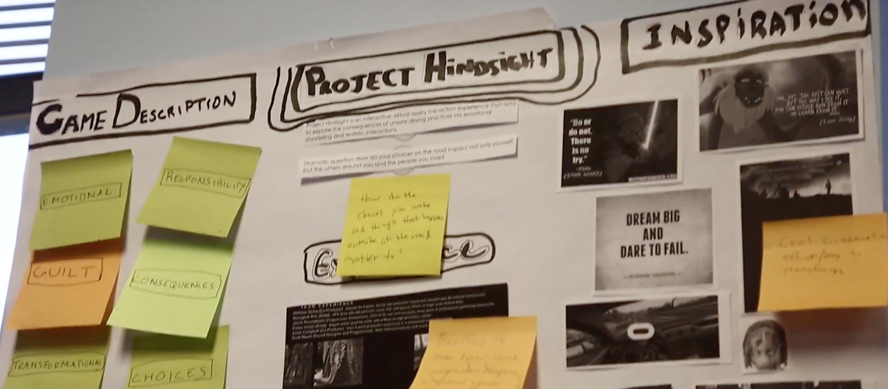
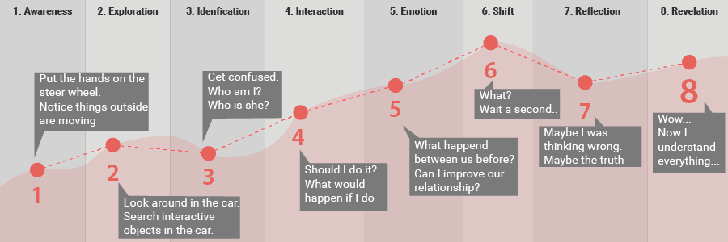
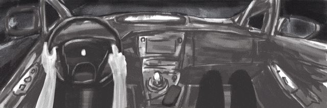
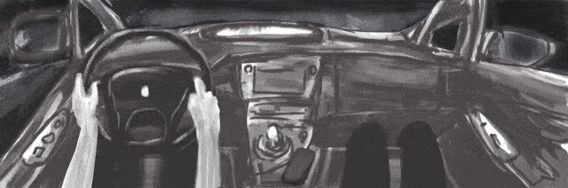
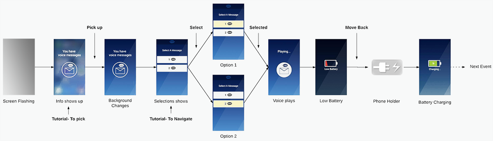

Mobile - Web App
Give Me Your Gun
Context
Give Me Your Gun is a mobile interactive theater experience which deals with the controversial topic of gun violence in the U.S. It ran at the Games for Change Festival (G4C) 2016 in New York City, to a crowd of more than 200 people.
30 seconds trailer
Full experience at the Games for Change Festival
The Challenge
The goal of this project was to define, design, develop and execute a live game experience for the June 2016 G4C Festival in New York City. We were tasked with defining the design and physical elements of a live game to run during the Festival. The game needed to consider the following criteria:
The Approach
-- Ideation
On a high level, we sought to create an experience that empowered people with understanding and empathy of others' beliefs. We wanted to leverage this to cultivate meaningful conversation around the issue of Gun Violence in the U.S
- What: Is the transformation really valuable?
- How: Does the strategy execute the transformation?
- Design: Does the design lead to the the strategy?
-- The Experience
In this live experience, an audience controls a conversation that is happening on stage between two actors with opposing gun control view points. By keying in questions on a custom made web application, the audience controls what one of the actors says to the other, guiding the dialogue to a conclusion.
Audiences control conversations that are happening on stage between two actors.
To guide the audience along, whenever a key story fact is achieved, it is shown on screen. The web interface is temporarily locked and a live cut scene acted out, with hints to unlocking the next key fact. The name of the player who unlocked the key fact is also shown in order to give them a sense of agency.
The name of the player who unlocked the key fact is shown.
User Flow
Phone Interaction
- Key Fact Unlocked When an fact was unlocked, a popup window directs audience's attention to the stage in order to increase engagement.
- Dynamic Voting System Dynamic voting mechanism gives audiences sense of playing in a large group, and shows the continuous message stream.
Key Fact Unlocked
Dynamic Voting System
Service Blueprint
In order to deliver our project to the G4C festival, we promoted the game, installed it in the space, and gave gameplay instructions during the showcase itself. To help our audience understand the gameplay, we used a detailed visualisation of how the actions and processes between the audience and the game affected the experience.
Result
We designed this theater game with the aim of transforming our audience beyond their experience playing. Impacting players' emotions as they directed the actors onstage served as our emotional goal, all while we tried to build up their understanding and mastery of the specific mechanics of the performance.
VR - Oculus Rift
Hindsight
Context
Hindsight overview
Hindsight is an exploration into VR interactive storytelling about bad driving habits
We combined film and game development techniques to craft an choice-driven, interactive,
live-action 360 film for the Oculus Rift.
Hindsight was a finalist in the CHI PLAY 2017 (Amsterdam).
Also Published at World Design Summit 2017 (Montreal).
The Challenge
Creating an amalgam of live action 360 film with 3D assets in VR with an emotional story dealing with bad driving habits and the themes of choice, consequences, guilt and responsibility.
live action 360 film with 3D assets in VR
Emotional story about bad driving habits
The Approach
-- Ideation
On a high level, we sought to create a VR experience allows users to interact with the branching narrative flow. During the ideation phase, we tried to identify what are the cirticle story elements that will switch between story segments in response to player actions.
We decided to focuse on themes of bad driving habits and using Guilt as a motivator in the story.
Designing The Experience
To design this narrative VR experience, I started with analyzing user's engagement during different story stages, then illustrated more detailed experience with storyboards and animations.
-- User Emotion Map
I staged the high level story structure by analyzing user's emotion and engagement through the story progression in the VR space. In this way, the team had a clear roadmap to develop the experience.
-- Storyboarding
Next, I drew storyboards to illustrate the experience and interaction events in each stage based on the emotion map. The storyboards helped the team so identify the visual elements in the time frame.
Awareness stage
Exploration stage
-- Interaction Mockup Animation
With the storyboards, I created some simple animations to visualize the phone/radio interaction in the VR space.
Interact with the phone
Interact with the radio
-- Interaction Flow
Last, with the design framework I built, I was able to create the detailed interaction flow for the final implement.
Phone interaction flow
Result
In Hindsight, we have seen that it is possible to make a choice based experience that merges 360 live-action footage with CG objects, and can see where it can be improved. Having an actor look you directly in the eyes and having your brain tell you they are next to you is a truly powerful interaction. Blending that with an experience that is highly interactive and blurs the boundary of the cinema and CG will spawn some fascinating and likely moving experiences.